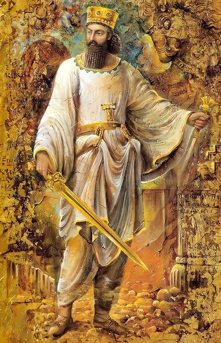

Who was Cyrus the great ?
Cyrus ⟨کوروش⟩ was the founder of the Great Persian Empire. He is a character of great importance in history, and a detailed history of his somewhat extraordinary birth and upbringing are given by both Herodotus and Xenophon. Although later Persian emperors were not known for their magnanimity, Cyrus has a relatively good reputation as a just and merciful monarch. He is credited by the Jews with overthrowing the much harsher Babylonian Empire, and allowing 40,000 Jewish exiles to return to Judea. There are numerous other examples of his leniency in dealing with conquered peoples.